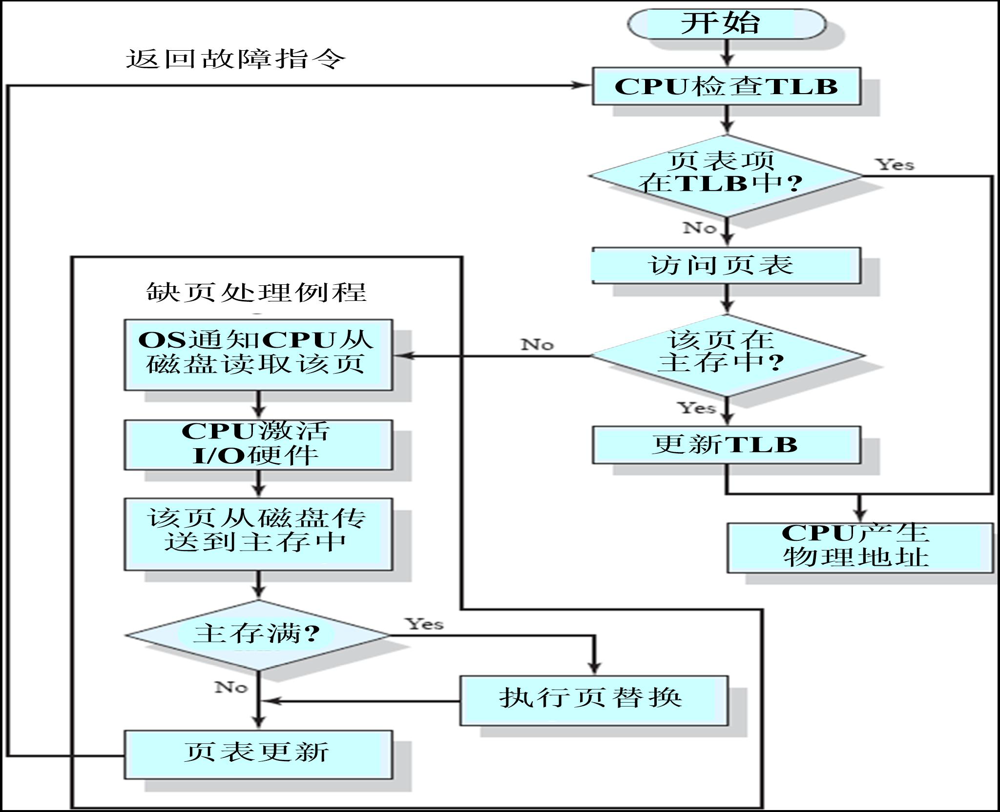
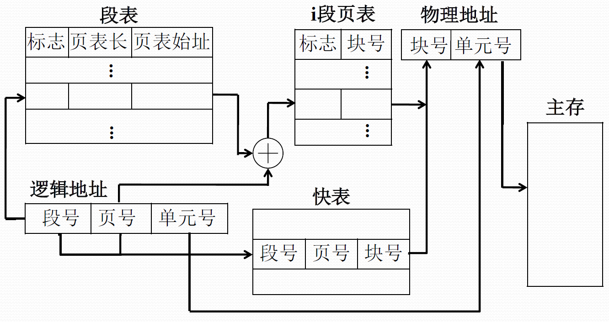
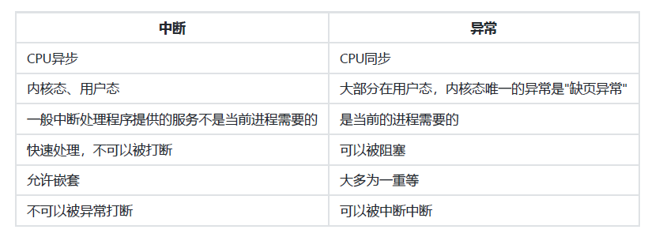

操作系统八股
6. 操作系统
用户态和内核态
- 在内核态下，CPU可以执行所有的指令和访问所有的硬件资源
- 在用户态下，CPU只能执行部分指令集，无法直接访问硬件资源
- 内核态的底层操作主要包括：内存管理、进程管理、设备驱动程序控制、系统调用等。
进程和线程
- 进程是操作系统资源分配的基本单位，而线程是任务调度和执行的基本单位
- 每个进程都有独立的代码和数据空间（程序上下文），程序之间的切换会有较大的开销；线程可以看做轻量级的进程，同一类线程共享代码和数据空间，系统不会为线程分配内存，每个线程都有自己独立的运行栈和程序计数器（PC），线程之间切换的开销小
- 进程中某个线程如果崩溃了，可能会导致整个进程都崩溃。而进程中的子进程崩溃，由于进程间的隔离性（不共享内存和资源），并不会影响其他进程。
多线程
- 多线程可以充分利用多核处理器的资源，提高程序的运行效率，但是会存在并发和死锁问题
- 线程的创建和切换会消耗系统资源，线程过多会增大开销
线程切换与进程切换
- 进程切换涉及到更多的内容，包括整个进程的地址空间、全局变量、文件描述符
- 线程切换只涉及到线程的堆栈、寄存器和程序计数器等，不涉及进程级别的资源
- 线程切换过程：上下文保存->调度器决定下一个线程->上下文恢复->调度执行
进程的状态
进程通信
- 通信方式：管道、消息队列、共享内存、信号、信号量
- 管道分为匿名管道和命名管道
- 信号：一种处理异步事件的方式。信号是比较复杂的通信方式，用于通知接收进程有某种事件发生
- 信号量：进程间通信处理同步互斥的机制。常用于解决共享内存的并发问题
- 共享内存的实现方式是将两个进程的某块虚拟内存映射到同一块物理内存
线程通信
- Linux系统提供了五种用于线程通信的方式：互斥锁、读写锁、条件变量、自旋锁和信号量
- 自旋锁通过 CPU 提供的
CAS函数在用户态完成加锁和解锁操作，不会主动产生线程上下文切换。加锁失败后，线程会忙等待，直到它拿到锁 - 读写锁由读锁和写锁两部分构成，如果只读取共享资源用读锁加锁，如果要修改共享资源则用写锁加锁。读写锁在读多写少的场景，能发挥出优势
进程调度算法
- 先来先服务（FIFO）
- 最短作业优先（Shortest Job First, SJF）
- 高响应比优先 （Highest Response Ratio Next, HRRN）
- 时间片轮转调度算法（RR）
- 最高优先级调度算法（HPF）
- 多级反馈队列调度算法
虚拟内存
- 虚拟内存可以使得进程对运行内存超过物理内存大小，因为程序运行符合局部性原理，对于那些没有被经常使用到的内存，我们可以把它换出到物理内存之外
- 每个进程都有自己的页表，所以每个进程的虚拟内存空间就是相互独立的，解决了多进程之间地址冲突的问题
- 分页是把整个虚拟和物理内存空间切成一段段固定尺寸的大小，虚拟地址与物理地址之间通过页表来映射
- 页表是存储在内存里的，内存管理单元 （MMU）就做将虚拟内存地址转换成物理地址的工作
- 分页下：物理地址 = 页框号 * 页大小 + 页内偏移；分段下：物理地址 = 段基址 + 段内偏移量；段页式下：虚拟地址 = 段号 + 页号 + 页内偏移量
- 
- 
写时复制
- 主进程在执行 fork 的时候，操作系统会把主进程的「页表」复制一份给子进程，这个页表记录着虚拟地址和物理地址映射关系，而不会复制物理内存。这样能够节约物理内存资源，页表对应的页表项的属性会标记该物理内存的权限为只读
- 但是当父进程或者子进程在向这个内存发起写操作时，CPU 就会触发写保护中断，操作系统会在写保护中断处理函数里进行物理内存的复制，并重新设置其内存映射关系，将父子进程的内存读写权限设置为可读写
brk()和mmap()
- malloc() 并不是系统调用，而是 C 库里的函数，用于动态分配内存。它会用brk()和mmap()两种方式向操作系统申请堆内存
- 通过 brk() 系统调用从堆分配内存会将「堆顶」指针向高地址移动，获得新的内存空间
- 通过 mmap() 系统调用，会用私有匿名映射的方式，在文件映射区分配一块内存，也就是从文件映射区“偷”了一块内存

页面置换算法
- 当出现缺页异常，需调入新页面而内存已满时，会用页面置换算法选择被置换的物理页面
- 最佳页面置换算法（OPT）：置换在未来最长时间不访问的页面
- 先进先出置换算法（FIFO）
- 最近最久未使用的置换算法（LRU）
- 最不常用置换算法（LFU）
- 时钟页面置换算法（Clock）

中断和异常
- 外中断又称中断或异步中断，是指来自处理器之外的中断信号，包括时钟中断、键盘中断、它机中断和外部设备等。外中断又可以分为可屏蔽中断和不可屏蔽中断，各个中断具有不同中断优先级
- 内中断又称异常或同步中断，是指来自处理器内部的中断信号，通常是由于程序执行过程中，发现与当前指令相关的、不正常或错误的时间
- 
IO模型：阻塞、非阻塞（轮询）、异步、IO多路复用
select/poll/epoll
- select/poll/epoll 是内核提供给用户态的多路复用系统调用，进程可以通过一个系统调用函数从内核中获取多个事件。

- 在获取事件时，先把所有连接（文件描述符）传给内核，再由内核返回产生了事件的连接
- select/poll：将已连接的 Socket 都放到一个文件描述符集合，然后调用 select/poll 函数将文件描述符集合拷贝到内核里，让内核通过遍历（select遍历bitmap，bitmap定长有上限，poll遍历链表无上限）来检查是否有网络事件产生，如果有将此 Socket 标记为可读或可写， 接着再把整个文件描述符集合拷贝回用户态里。用户态还需要再通过遍历的方法找到可读或可写的 Socket
- epoll：epoll 支持手动将需要监视的socket传入epoll对象，并在内核里使用红黑树来跟踪进程所有待检测的文件描述字，而select/poll 每次操作时都传入整个 socket 集合给内核。epoll 使用事件驱动的机制，内核里维护了一个链表来记录就绪事件，当某个 socket 有事件发生时，通过回调函数内核会将其加入到这个就绪事件列表中，当用户调用 epoll_wait() 函数时，只会返回有事件发生的文件描述符的个数，不用遍历socket集合
- IO多路复用：通过select、poll、epoll等系统调用，同时监听多个IO通道的事件。
1 | |
reactor模型
- 属于事件驱动架构，核心思想是通过IO多路复用技术来同时处理大量的客户端连接，而不是为每个连接创建线程，大大提高了服务器的可扩展性和性能。
- Reactor（反应器）：相当于事件分发器，负责监听和分发事件（如新连接、读写事件）给对应的处理器（Handler）。
- Acceptor（连接器）：当有新连接请求到达时，
Acceptor负责接收这些请求。具体来说，它调用系统的accept方法，从监听套接字中提取新连接的描述符。 - Handler（处理器）：负责具体的事件处理逻辑，如读取数据、业务处理及响应输出。
- 工作流程
Acceptor通过绑定和监听一个特定的端口来准备好接收连接。- 当Reactor通知
Acceptor有新的连接到来时，Acceptor使用accept方法接受连接。 - 创建一个新的
Handler或Connection对象，来专门处理新连接上的I/O操作。 - 把新连接的套接字和相关
Handler注册到事件分发器上，以便Reactor能够分发后续的I/O事件。
- 下图为多reactor方案（单reactor参考redis）

零拷贝
- 传统方式：磁盘 –(拷贝1)–> 内核缓冲区 –(拷贝2)–> 用户空间 –(拷贝3)–> socket缓冲区 –(发送)–> 网卡
- 零拷贝：磁盘 –(内核空间直接传递)–> socket缓冲区 –(发送)–> 网卡

操作系统八股
https://frosty-xue.github.io/2025/05/14/操作系统八股/